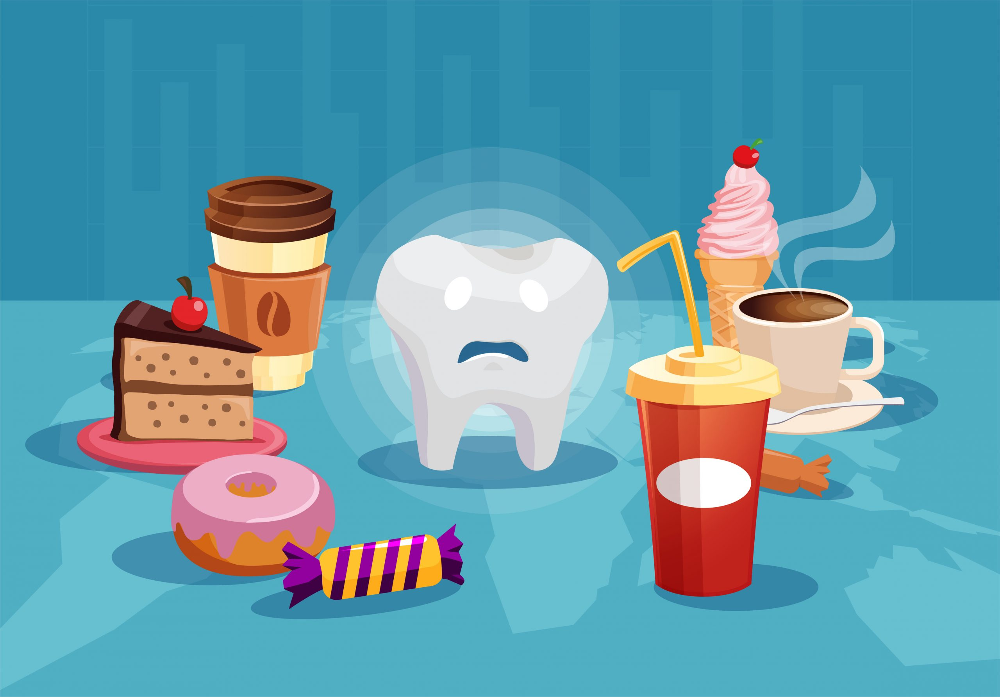

ImpulsoDental
ImpulsoDental
Schedule: Monday to Sunday by appointment
Trinidad Moran, Lince
Contact us: +51 955163208
Informative blog

Correct cleaning of your teeth
Proper tooth brushing and flossing are critical to maintaining good oral hygiene and preventing dental problems such as cavities, gum disease, and bad breath. Here is information on how to perform these procedures correctly:

Foods and habits to avoid to maintain good dental hygiene
We understand that there are often suboptimal choices to be cautious of, but excessive marketing in today's world often leads to misinformation. Here, we provide insights into unfavorable habits and dietary choices that warrant consideration about your dental health.